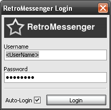

RetroMessenger - Just talk with your friends: This Instant Messenger is open source, secure and serverless.
- You need an open source application to keep in touch with your friends? RetroMessenger is a easy to use and simple Instant Messenger to keep all your friends listed in a friendlist and to message them.
- You want to secure chat based on PGP-keys? All messages to your friends are secure and encrypted, so no third party is listening. You just need to swap with your friend a PGP-Key and you are done. RetroMessenger is encrypted out of the box, that means no difficult installation or extra-downloads for the encryption part is needed.
- You do not want to send your chats over a server or a registered central server account? RetroMessenger does not need a central server. So the network never will be down or monitored by one central authority sending you adds or "weather notices". With RetroMessenger you are not on anyones "needle", you are only connected to your community.
- You want to use a messenger designed for a linux/win mobile phone? More and more you have Instant Messaging on you mobile phone. RetroMessenger is designed with a small tiny gui to fit these needs on mobile phones.
- You are IT-admin in a company wanting to use a simple server & maintenance free instant messaging solution? RetroMessenger is an easy to admin tool. So as well small/medium companies choose this messenger for the employees to have an real time communication tool without the need to admin or maintain a server.
- You are wxwidgets developer and think this toolkit should be used on the open source serverless wxwidgets messenger? RetroMessenger uses a wxwidget gui, as this is cross platform and offers a well design.

Technically RetroMessenger has two main components: The core libretroshare (C++) and the wxWidgets toolkit for the graphical user interface (GUI).
It is serverless, as it uses a DHT to find the actual IP adress of the friend.
If you want to reach the list, write to: retromessenger-team [[at]] lists [[dot]] sourceforge [[dot]] net
The screenshots show the generate certificate, login, friendlist and chat pages and as well "Link Cloud", a cool feature to insert http-links or Hash-URLs to send them directly to your friends. So it is like in any social network, where people share the coolest news and newest places to browse. There is a "Rate"-Button, each URL can be rated from +2 / +1 / 0 / -1 / -2 and as well commented why.
If you press the "rate" or/and "send" (forward)-Button, then the one selected URL is sent to your friends. So be sure to rate the URLs from your friends daily or instant. Of course you can insert a new URL / Link as well, so your friends can rate it.
So as a user go to the download tab and try to install the actual version. As an experienced user see the SVN for detailed status of development and get in touch with the development-team for your ideas and questions.
So you might want to ask, where to start how to support the development:
Try to check out the code from the SVN Version Control of the current codings: Use the trunk path : wx-me
Download the secure & serverless RetroMessenger or join the Development Team for wxWidgets Graphical User Interface.